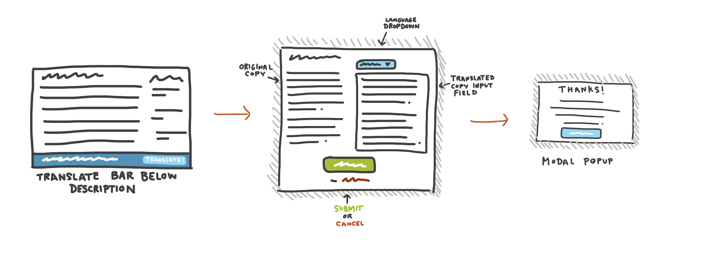
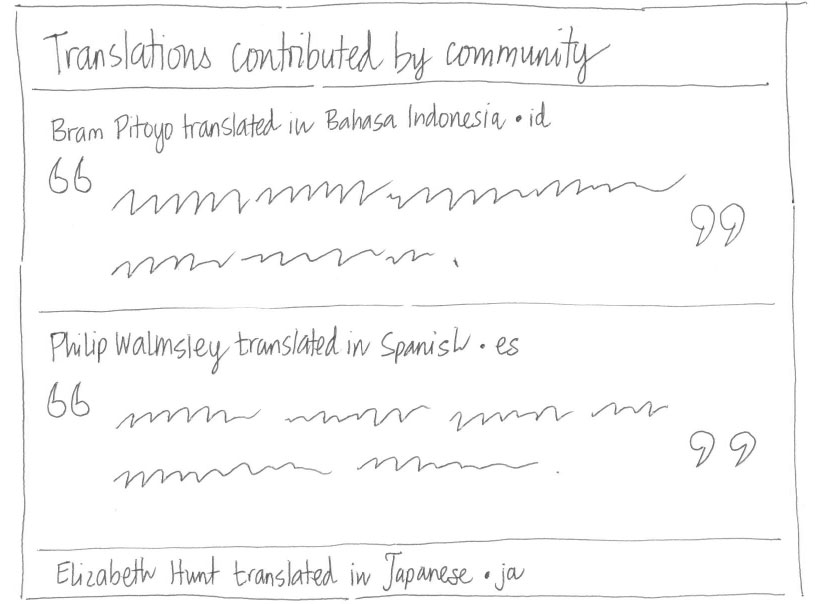

---
layout: MarketplaceUXSpec
multipage: false
---	

<div class="container">
	<h1>Concept &rarr; Localise app description</h1>

	<!-- Pagination. If you have more than one page, set the multipage variable in the Frontmatter to true. Editing the pagination code happens in /_includes/homePagination.html. -->
	{% if page.multipage %}
		{% include homePagination.html %}
	{% endif %}

	<div class="col-sm-12 col-md-12 col-lg-12">
	
	  <h3>Launch program</h3>
	  
	  <h4>Developer-facing</h4>
	  
	  <p class="longText">Exactly the same as the concept for <a href="concept-screenshots.html">supplementing app listing page with screenshots</a>.</p>
	
	  <h4>User-facing</h4>
	
	  <ol class="longText">
	    <li>A “Translate” link appears below the Description field in the App Details page</li>
	    <li>When selected, a modal pop-up appears with these elements:
	      <ol>
	        <li>The original string (in this case, it’s English)</li>
	        <li>A textbox that allows user to localise the string in a selected locale</li>
	        <li>Submit and Cancel</li>
	       </ol>
	     <li>When submitted, a success message is displayed</li>
	  </ol>
    
    
    
    <h3>Notify new contribution</h3>
    
    <p class="longText">Exactly the same as the concept for <a href="concept-screenshots.html">supplementing app listing page with screenshots</a>.</p>
    
    <h3>View contribution</h3>
    
    <p class="longText">Contributed translations are ordered by date submitted in descending order (latest translations appear first). In this interface, a developer can copy and paste a translation string, then add it into the app’s Marketplace Config file.</p>
    
    
    
    <p class="longText">The updated Marketplace Config file, with the new translation string included, is then resubmitted to Marketplace.</p>
    
	</div>